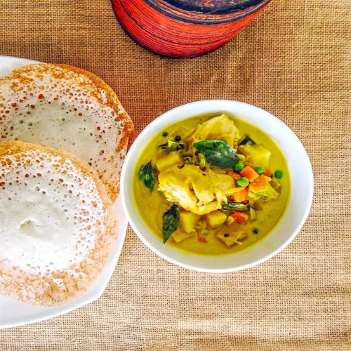

Chicken Stew

Enjoy your Sunday brunch with a Kerala-style chicken stew. This mildly spiced, creamy stew can be paired with appam, bread, or chapatis. Alternatively, you can have it with rice.
Ingredients
- 2 tablespoons coconut oil
- 1 (1 inch) piece cinnamon stick
- 1 1/2 tsp black peppercorns
- 4 whole cloves, or more to taste
- 2 pods cardamom
- 4 cloves garlic, minced
- 1 (1 inch) piece ginger, minced
- 1 onion, finely chopped
- 1 bay leaf
- 1 potato, cubed
- 1 small carrot, cubed
- 2 green chile peppers, sliced lengthwise
- 3 green beans, finely chopped
- salt (as per required taste)
- 1 tsp ground black pepper
- 3/4 tsp ground turmeric (Optional)
- 14 ounces chicken breast, cut into small pieces
- water to cover
- 3/4 cup coconut milk
- 2 tbsp green peas
Directions
- Melt coconut oil in a large pot over medium heat. Add cinnamon stick, peppercorns, cloves, and cardamom; cook and stir until fragrant, about 1 minute. Add garlic and ginger; cook and stir until browned, about 1 minute.
- Stir onion and bay leaf into the pot; cook, stirring constantly, until onion is translucent, about 5 minutes. Add potato, carrot, green chile peppers, green beans, and salt. Stir in ground black peppers and turmeric. Cook, covered, for 3 minutes.
- Stir chicken into the pot until evenly mixed, 2 to 3 minutes. Pour in enough water to cover the chicken. Reduce heat to low; cover and cook until chicken is tender, about 30 minutes.
- Stir coconut milk and green peas gently into the pot. Cook until heated through but not boiling, about 5 minutes.